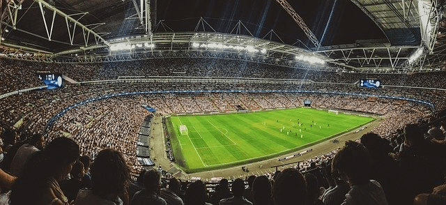
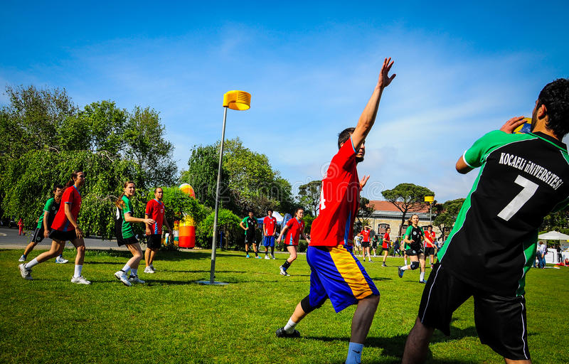
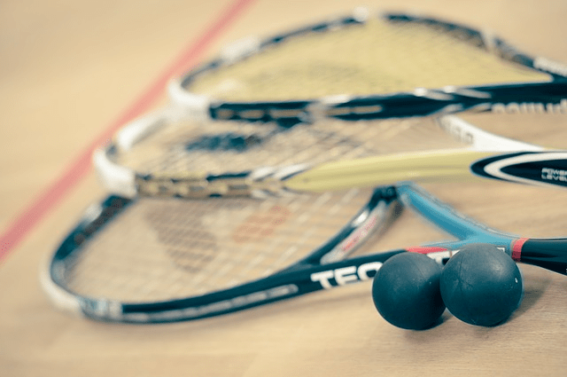
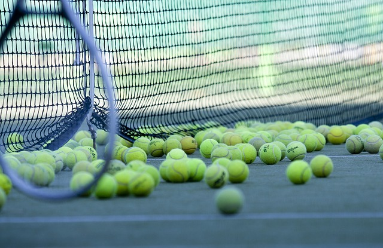
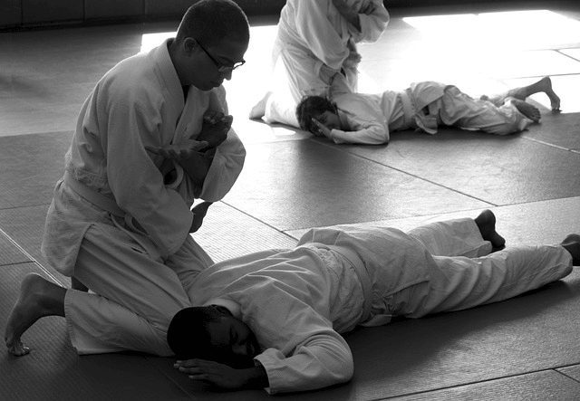
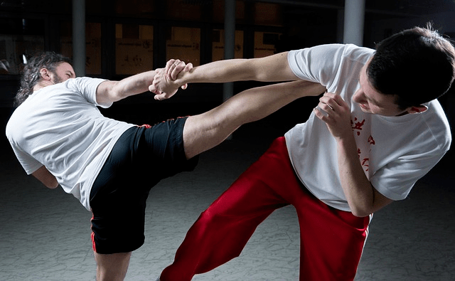
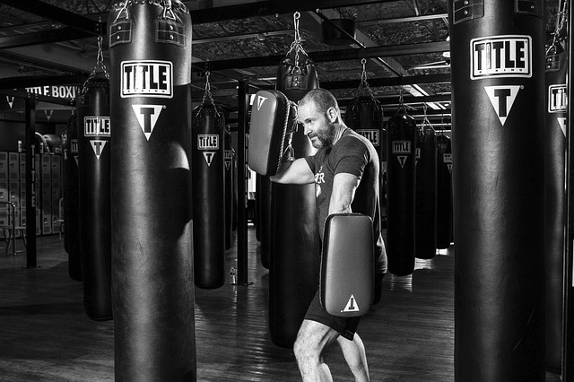
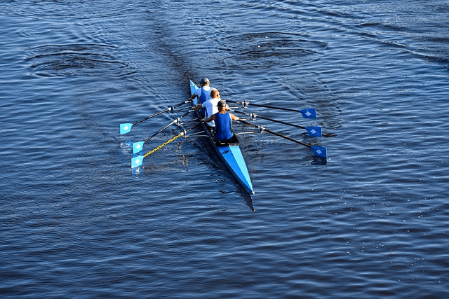
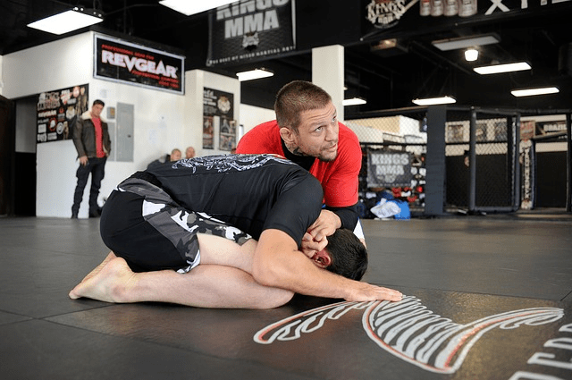

If you are looking for a sports club, Amsterdam has got you covered, being a European capital, there is no shortage of clubs of all kinds of sports to satisfy your needs. We have compiled a list of 10 sport clubs that we think will grab your attention.
Amsterdam Sports Club By Strong Willpower (SDW)

Blue White (korfball)
Centered around the Dutch sport Korfball, which is inspired by ringball a Swedish sport, males and females play together in teams of 8. This club offers lessons, matches and competitions for both kids and adults.

Flowmotion
Running is not as simple as you might have thought, with a group of enthusiasts you will learn new techniques to improve your running and will learn to get rid of any bad jogging habits.
Sportclub Match & Eetcafé Thijs (squash)
7 squash courts, lessons for adults and kids, and an online platform from where you will be matched with other players for a friendly competition.

Amsterdam Tennis Academy
With eight professional indoor tennis courts and a head coach with over 35 years of experience, this club offers tennis training programs for youth, adults, people who only have time in the morning, and to tourists just visiting the city.

Aikidojo Amstelveen
Learn the art of peace Aikido, created to allow unarmed men to defend against sword wielding opponents. This school offers beginner and advanced courses, also courses specialized for kids with special needs and those with weight problems.

Kung Fu School Golden Dragon Amsterdam West
Strengthen your body but also your mind and soul, thanks to the traditional way of teaching you will learn five Kung Fu styles in addition to weapon techniques, and only for the small price of 17 euro/mth.

Kickboxing Fit
Intense training in duo’s, designed to always make ascend to the next level, your physical condition and mental toughness will improve drastically. And if you are not a fan of the smelly halls, don’t worry, all training sessions take place OUTSIDE!!

Top Row
Explore the beautiful canals of Amsterdam while exercising, rowing is great sport that can be practiced throughout the whole year, the club offers team and private lessons for all levels.

Team leijdekker
Learn one of the most effective martial arts in the world today, Brazilian Jiu Jitsu. By practicing this art you will be able to keep up and even dominate opponents bigger than you. Sign up for a trial lesson and discover the genius behind it.
